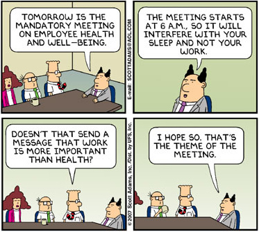

Dilbert Revisited—The Cost of
Bad Bosses

Peter Drucker,
universally regarded as the father of modern American management, held that the art of
management consisted in bringing out the best in people; he considered workers a resource,
not a cost. But despite his fame, his vision of a humane collaborative workplace with
respect for the dignity of each individual employee, never took root in the American
corporation. The dynamic, two-fisted, hard-charging manager is deeply ingrained in the
American psyche. A talented manager can save a dying business. Lee Iacocca resuscitated
Ford, Lou Gerstner revived IBM and Jack Welch made GE one of the greatest corporations in
the world. These men are rightly regarded as visionaries and miracle workers.
But for every Lee Iacocca there is a Kenneth Lay, for every Lou Gerstner there is a Bernie Ebbers, for every Jack Welch there is a John Rigas, i.e. men who would loot and destroy their own companies for personal gain. The pendulum of trust in marquee stars has obviously swung too far in the wrong direction. But it will not be easy for corporate boards to renounce their love of celebrity CEOs, and for two reasons: (1) hiring stars relieves them of their duty to conduct due diligence and vet CEO candidates thoroughly, and (2) if anything goes wrong, they can always claim they hired the very best man available, for who could come better recommended than a candidate universally acclaimed by the business community?
At the turn of
the century
In a Newsweek interview (March 21, 2005), Howard Stringer, the first gaijin to head the Sony corporation, was asked what had gone wrong with the troubled company. (The once proud electronics powerhouse and flagship of the Japanese economy had lost 75 percent of its stock price and its electronics division was underperforming so badly that the corporation was in danger of becoming the target of a hostile takeover.) Stringer replied that the problem was too much management: the company had been taken over by bureaucratic mandarins who no longer listened to the engineers, and who had driven one of the world's greatest corporations into the ground. Said Stringer: "The business of Sony had become management, not making products. Engineers are the stars. Point them in the right direction and let them go."
I subtitled these recollections as a Dilbert memoir. Scott Adams has mined a rich vein of whimsical humor and irony, sending up the duplicity and skullduggery of the entrenched creeps and megalomaniacs who manage our corporations. All life is a comedy Adams tells us, and we must roll with the punches. But there's nothing funny about mismanagement: bad bosses inhibit productivity and cause companies to underperform dramatically. In addition to the obvious human toll, abusive bosses cost companies billions in employee turnover. That a large number of U.S. businesses are run along the lines of third-rate banana republics is well known; but that this is accepted without indignation, as something inherent in the natural order of things, by persons of wit and intelligence, like Scott Adams, is an alarming sign that the abusive boss is still a powerful mythic figure and a permanent fixture of the work environment.
Another whimsical 'humorist' who fancies himself as an expert on the subject of bad bosses is Stanley Bing, author of best-selling Crazy Bosses. According to Bing 'the crazy boss is aided by his insanity, not hampered by it':
His bullying, paranoia, selfishness, ruthlessness, perfectionism, and addiction to drugs, booze, or work are the only tools he has to achieve all the things expected of him.
This is the rogue theory of management, according to which a boss has to be a son of a bitch to get anything out of his workers. But more often than not, these personality disorders and Gestapo tactics are simply a mask to divert attention from the boss's incompetence. Workers respond to leadership, not psychosis. Bad bosses are essentially psychopaths who self-medicate themselves with rage and feed their spite on the humiliation and degradation of their employees. But here is Bing again:
Bullies are everywhere. From the gorges of Africa to the boardrooms of New York, Hong Kong, and Los Angeles, management by terror has been a time-honored technique because it works. The most mediocre man or woman can suddenly seem dynamic, forceful, and decisive if he or she is mean enough.
We could charitably interpret this as tongue in cheek, amusing irony but pernicious psychology, except that Bing is peddling pure poison; he is not interested in serious analysis, nor in offering us solutions. A world-weary cynic posing as a humorist, he, like Scott Adams, is entertaining the masses at the expense of a serious social issue. His motivation is best sellerdom.
The purpose of
humor is to help us cope with the inescapable vicissitudes of life; whimsy should never be
used to evade unpleasant truths, yield to defeatism and embrace failure; most managerial
problems are remediable, and only appear to be intractable because we have not had the
boldness and imagination to confront them. There's nothing inevitable about the
mistreatment of employees. It is not in the natural order of things for tyrannical and
incompetent bosses to meddle with the work of gifted and highly-trained workers. Nowhere
is it engraved in stone that managers need manipulate their subordinates with intimidation
tactics. American business will only rise to its true potential when its management class
becomes the moral and professional equal of its technicians, engineers and scientists.